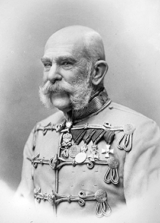

Franz Joseph I of Austria
Franz Joseph I also Franz Josef I or Francis Joseph I (Franz Joseph Karl; 18 August 1830 – 21 November 1916) was Emperor of Austria, King of Hungary, and monarch of other states in the Austro-Hungarian Empire, from 2 December 1848 to his death. From 1 May 1850 to 24 August 1866 he was also President of the German Confederation. He was the longest-reigning Emperor of Austria and King of Hungary, as well as the third-longest-reigning monarch of any country in European history, after Louis XIV of France and Johann II of Liechtenstein.
In December 1848, Emperor Ferdinand abdicated the throne at Olomouc, as part of Minister-president Felix zu Schwarzenberg's plan to end the Revolutions of 1848 in Hungary. This allowed Ferdinand's nephew Franz Joseph to accede to the throne. Largely considered to be a reactionary, Franz Joseph spent his early reign resisting constitutionalism in his domains. The Austrian Empire was forced to cede its influence over Tuscany and most of its claim to Lombardy–Venetia to the Kingdom of Piedmont-Sardinia, following the Second Italian War of Independence in 1859 and the Third Italian War of Independence in 1866. Although Franz Joseph ceded no territory to the Kingdom of Prussia after the Austrian defeat in the Austro-Prussian War, the Peace of Prague (23 August 1866) settled the German question in favour of Prussia, which prevented the Unification of Germany from occurring under the House of Habsburg.
Franz Joseph was troubled by nationalism during his entire reign. He concluded the Austro-Hungarian Compromise of 1867, which granted greater autonomy to Hungary and transformed the Austrian Empire into the Austro-Hungarian Empire, under his dual monarchy. His domains were then ruled peacefully for the next 45 years, but Franz Joseph personally suffered the tragedies of the execution of his brother Emperor Maximilian of Mexico in 1867, the suicide of his only son and heir, Crown Prince Rudolf, in 1889, and the assassination of his wife, Empress Elisabeth, in 1898.
After the Austro-Prussian War, Austria-Hungary turned its attention to the Balkans, which was a hotspot of international tension because of conflicting interests with the Russian Empire. The Bosnian Crisis was a result of Franz Joseph's annexation of Bosnia and Herzegovina in 1908, which had been occupied by his troops since the Congress of Berlin (1878).
On 28 June 1914, the assassination of his nephew, Archduke Franz Ferdinand, in Sarajevo resulted in Austria-Hungary's declaration of war against the Kingdom of Serbia, which was Russia's ally. That activated a system of alliances which resulted in World War I.
Franz Joseph died on 21 November 1916, after ruling his domains for almost 68 years. He was succeeded by his grandnephew Charles.